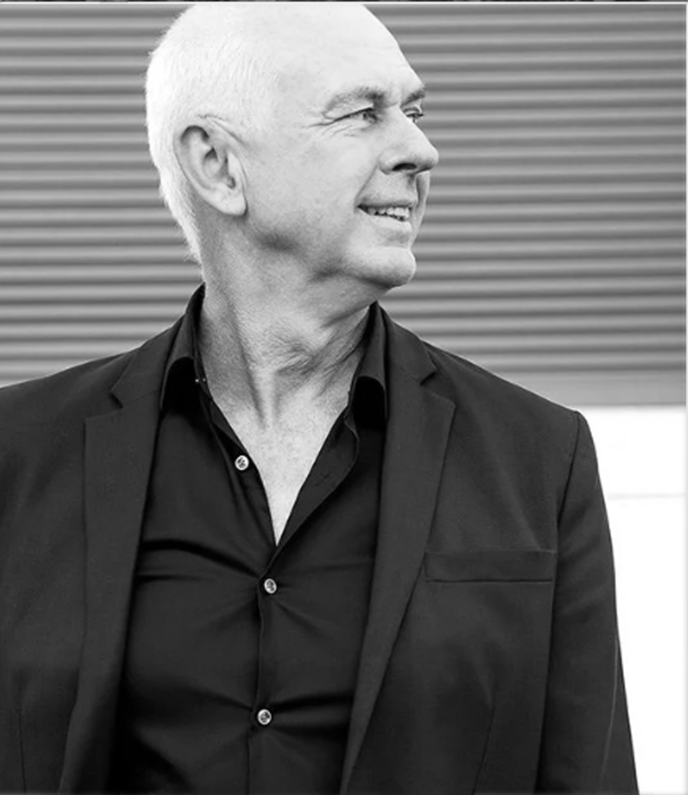
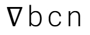

Curators
Original Concept
The idea — to create a dialogue between a historic 1927 ceramic garden model and new visions by contemporary landscape architects — began with Marina Cervera Alonso de Medina. She led the process from concept to realisation, selecting two strategic partners as curators and coordinating the participating designers — the project's Dreamers — within a homoclimatic framework that connects each proposal to the ecology of the Barcelona Botanical Garden. She worked directly alongside the Barcelona 2026 World Capital of Architecture team, the Botanical Garden and the ceramic studio to translate each designer's vision into a produced piece, and coordinated the planting scheme proposed by each team with a local nursery and maintenance crew. Each piece has been a team effort — a unique work of art bringing the Dreams from the Rooftop to life.
Curatorial Team
Marina Cervera
Parlour Gardens Project Director
CEO of NablaBCN and director of the Barcelona International Landscape Biennial, Cervera brings extensive experience in curating large-scale international landscape and architecture events, with a focus on interdisciplinary practice and civic engagement.

James Hayter
IFLA Past President
Past President of the International Federation of Landscape Architects and founding partner of Oxigen. Hayter connects Parlour Gardens to the global landscape architecture community, bringing decades of experience in cross-cultural practice and professional leadership.

José Luis Cortés
UIA Past President
Past President of the International Union of Architects. Cortés anchors Parlour Gardens within the architectural ecosystem mobilised by the UIA congress and the official Barcelona 2026 World Capital of Architecture programme.

Exhibition Design and Museography
NablaBCN Studio SCP
Barcelona-based practice specialising in architecture, landscape and urbanism. Winners of the New European Bauhaus Prize for the Carrer Girona Green Axis — one of Barcelona's landmark public space transformations — the studio shaped the spatial and conceptual language of the exhibition, bringing a deep understanding of the relationship between city, nature and the built environment.
Marina Cervera
Parlour Gardens Project Director
CEO of NablaBCN and director of the Barcelona International Landscape Biennial, Cervera brings extensive experience in curating large-scale international landscape and architecture events, with a focus on interdisciplinary practice and civic engagement.

James Hayter
IFLA Past President
Past President of the International Federation of Landscape Architects and founding partner of Oxigen. Hayter connects Parlour Gardens to the global landscape architecture community, bringing decades of experience in cross-cultural practice and professional leadership.
José Luis Cortés
UIA Past President
Past President of the International Union of Architects. Cortés anchors Parlour Gardens within the architectural ecosystem mobilised by the UIA congress and the official Barcelona 2026 World Capital of Architecture programme.

Exhibition Design and Museography
NablaBCN Studio SCP
Barcelona-based practice specialising in architecture, landscape and urbanism. Winners of the New European Bauhaus Prize for the Carrer Girona Green Axis — one of Barcelona's landmark public space transformations — the studio shaped the spatial and conceptual language of the exhibition, bringing a deep understanding of the relationship between city, nature and the built environment.